손그림이
이모티콘이 되기까지
대충 그린 낙서 한 장을 AI가 귀여운 이모티콘으로 바꿔주는
Stable Diffusion v1.5 + LoRA + ControlNet 파인튜닝 프로젝트
목차 (Contents)
프로젝트 개요
그림 실력이 없어도, 대충 그린 손그림 한 장을 넣으면 일관된 화풍의
나만의 이모티콘으로 바꿔주는 AI 변환 파이프라인을 직접 구현한다.
문제
이모티콘 제작엔 일관된 화풍·그림 실력 필요. 일반인 혼자 하기 어려움.
Pain아이디어
낙서를 Twemoji 스타일로 통일해주는 AI 변환 파이프라인.
Idea결과
10 epoch 학습 + Streamlit 데모를 HuggingFace Spaces에 배포.
Shipped
사용 기술 & 선정 이유
SD v1.5
SDXL보다 가벼워 Colab T4(12GB)·M1에 적합. LoRA·ControlNet 생태계 풍부.
경량LoRA rank=32
860MB 전체 대신 26MB만 학습. attention Q/K/V에 저랭크 행렬로 스타일 주입.
0.7%ControlNet scribble
거친 손그림에 특화. canny edge보다 관대 — 아마추어 스케치에 최적.
형태유지DPMSolver++ 스케줄러
적은 스텝에서도 품질 유지. 10~15스텝으로 CPU 추론 시간 단축. (UniPC IndexError 회피)
속도AdamW · lr 1e-5
LoRA 파인튜닝 표준 lr. 1e-4에서 이미지 붕괴 경험 → 10배 낮춰 안정화. fp32 강제(fp16 NaN).
안정시스템 아키텍처 / 파이프라인
전처리 핵심
정방형 패딩 → 이진화 → 512 리사이즈. 이진화 없으면 ControlNet이 조건을 못 읽음.
주요 파라미터
cn_scale 0.8 · guidance 7.5
steps 10~15 (CPU 최적화)
고정 프롬프트
pos: "twemoji style, cute animal face…"
neg: realistic, photo, blurry
※ 학습 워크플로우(노트북): Twemoji 수집 → 필터링·캡션 → LoRA 학습 → epoch 이어받기 → ControlNet 생성 → 곡선 시각화
데이터셋 수집 · 정제 · 증강
필터링 기준
국기·기호·사물·손 제스처 제거. 동물 얼굴 코드포인트 46개 선별 → 스타일 일관성 확보.
캡션
전 이미지 동일 캡션 "twemoji style, cute emoticon, flat color, white background"
증강 (×5배)
좌우반전 / 회전±8° / 밝기+12% · 동물 전처리(크롭·대비·선명도) → 46→230장.
학습 설정 (하이퍼파라미터)
| 항목 | 값 | 선택 이유 |
|---|---|---|
| Loss 함수 | MSE (noise pred) | DDPM 표준 — 노이즈 예측 오차 최소화 |
| Optimizer | AdamW | weight decay 내장 → L2 정규화 효과 |
| Learning Rate | 1e-5 → 5e-6 | 1e-4에서 이미지 붕괴 → 10배 낮춰 안정화 |
| Batch Size | 1 | Colab T4 / M1 메모리 한계 |
| LoRA rank | 32 (α=16) | 표현력 확보. 데이터 적어 과적합 위험 존재 |
| LoRA dropout | 0.1 | 10% 레이어 끄기 → 특정 입력 과의존 방지 |
| Target layers | to_q / k / v / out.0 | UNet attention만 → 최소 파라미터 최대 효과 |
| Data type | fp32 | fp16에서 loss NaN 발생 → 수치 안정성 우선 |
학습 진행 — Epoch별 생성 샘플
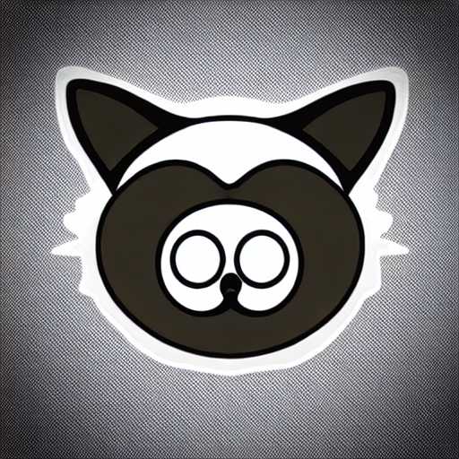
baseline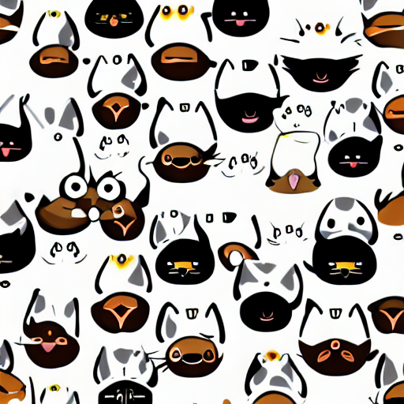
epoch 1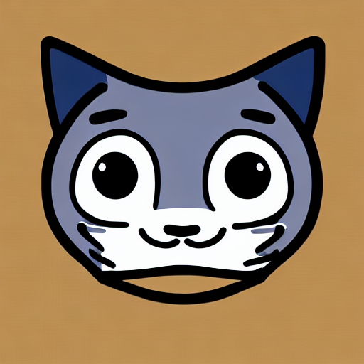
epoch 2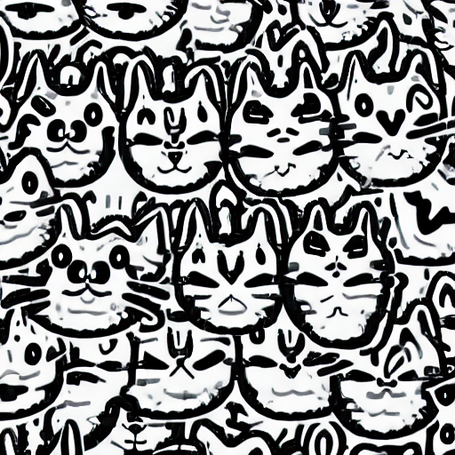
epoch 3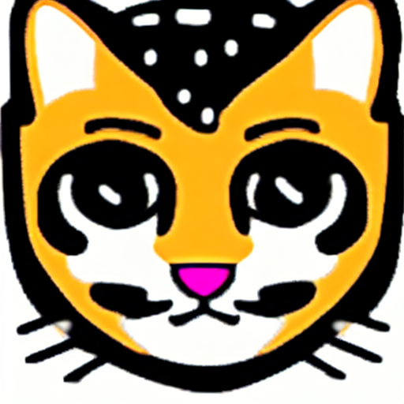
epoch 4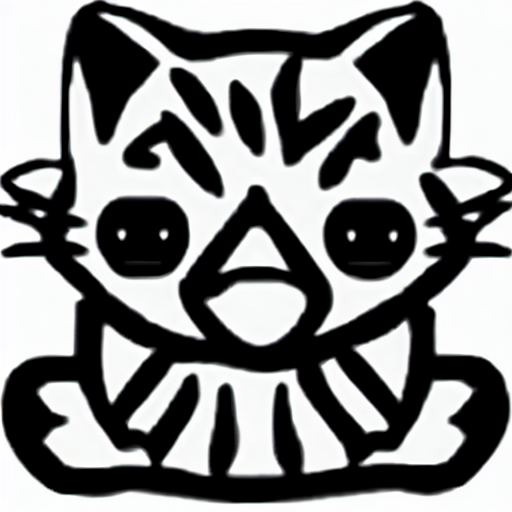
epoch 5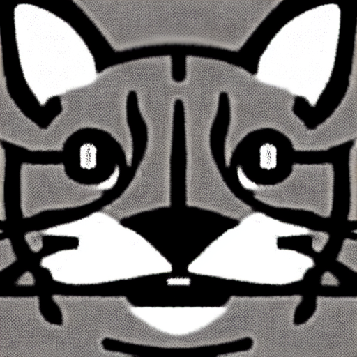
epoch 6 ⭐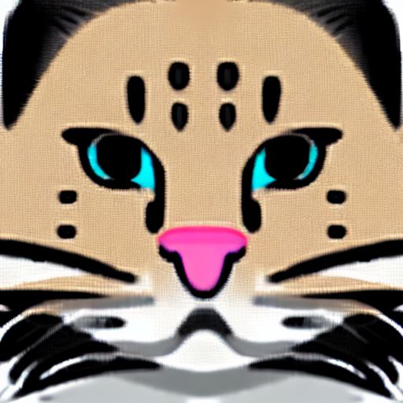
epoch 7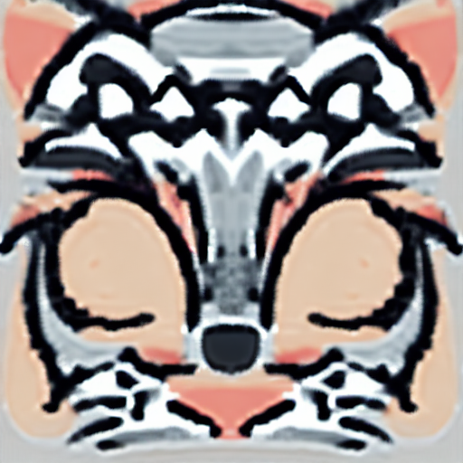
epoch 8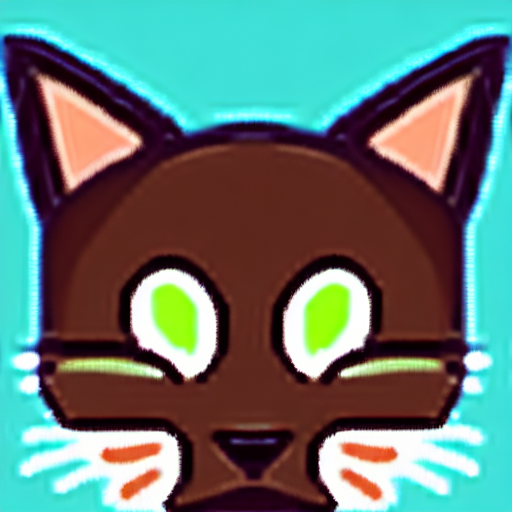
epoch 9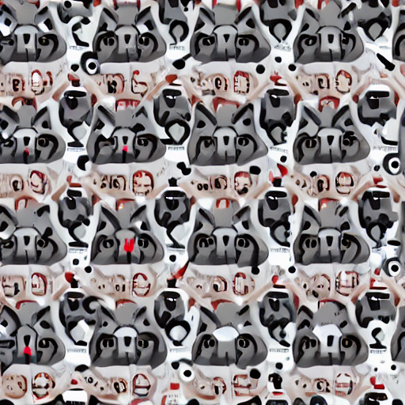
epoch 10 ⚠🌫️ 초반 (baseline~e2)
스타일 학습 전 — 형태는 잡히나 화풍 불안정.
😺 중반 (e3~e6)
굵은 외곽선·플랫 컬러 자리잡힘. epoch 6 loss 최저.
⚠️ 후반 (e9~e10)
과적합 — 여러 얼굴이 깨져 반복(붕괴) 발생.
학습 곡선 분석

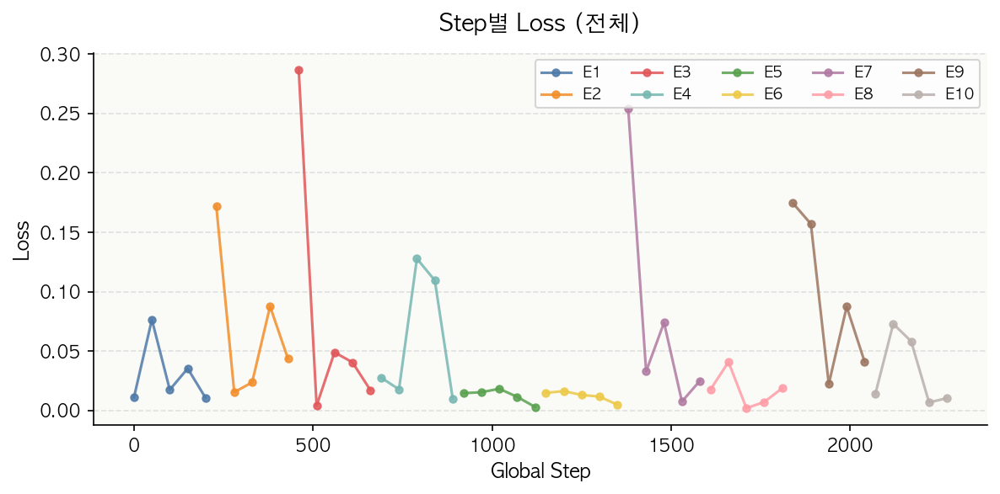
📌 epoch 시작마다 보이는 스파이크는 체크포인트 이어받기 시 옵티마이저 상태가 초기화돼 생기는 정상 현상. 수치상 최저는 E6이나, 시각적 선명도는 E7이 더 좋아 최종 E7 채택.
문제 발견 & 개선
최종 결과
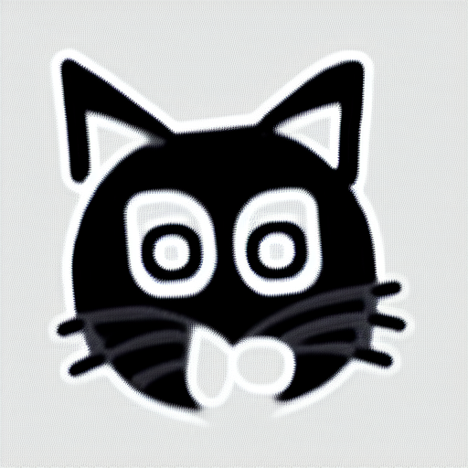
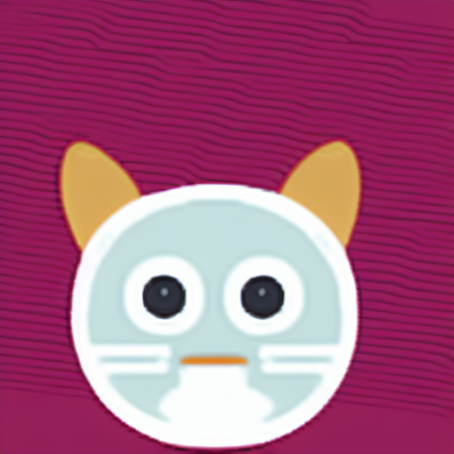
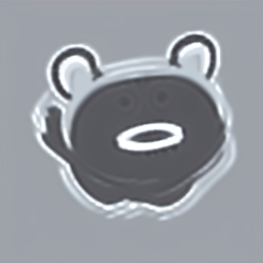
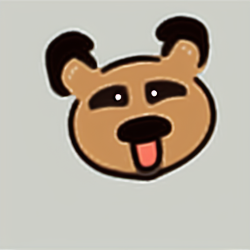
달성
거친 손그림에서도 굵은 외곽선·플랫 컬러의 이모티콘 화풍을 안정적으로 재현.
형태 보존
ControlNet scribble로 원본 손그림의 귀·수염·표정 구도를 유지.
변환 일관성
입력이 달라도 동일한 스타일로 통일 — 이모티콘 세트 제작 가능성 확인.
분석 — 생성 품질 · 가중치 · 데이터
생성 품질
epoch별 동일 프롬프트 샘플의 스타일 일관성·선명도 육안 평가.
이미지 통계
밝기·채도·색 다채로움 측정 — 이모티콘은 채도 높고 선명해야 함.
가중치 분석
LoRA 어댑터(to_q/k/v/out) 가중치 분포로 학습이 attention에 집중됐는지 확인.
EDA · 학습 리포트
데이터 분포·캡션·증강 결과와 학습 메타(스텝·loss)를 리포트로 정리.
학습 곡선
training_loss.csv 기반 epoch 평균·step별 loss 자동 시각화.
추후 계획
정량 평가 — CLIP Score(프롬프트↔이미지), FID(Twemoji 분포 vs 생성).
배포 & 데모
메인 앱
손그림 업로드 → LoRA+ControlNet 변환 → 이모티콘 저장
분석 6페이지
학습리포트 · 그래프 · EDA · 가중치분석 · 생성품질 · 학습곡선
노트북 연동
Jupyter에서 그래프 생성 → PNG 저장 → Streamlit에 표시
결론 & 느낀 점
💚 배운 점
LoRA로 전체의 0.7% 파라미터만 학습해도 화풍을 입힐 수 있음을 체감. 적은 데이터(230장)에서 정규화·증강의 중요성을 확인.
loss 최저 ≠ 시각 품질 최고 — 정량 지표와 사람 눈의 차이를 epoch 6 vs 7로 직접 경험.
체크포인트 이어학습, fp32 강제, 스케줄러 교체 등 실전 트러블슈팅 역량 확보.
🤍 아쉬운 점 · 다음 단계
CLIP Score·FID 등 정량 평가를 적용하지 못함 — 다음엔 학습 루프에 자동 평가를 넣을 계획.
데이터가 동물 얼굴 위주라 표정·소품 다양성 부족. 캡션 다양화로 확장 여지.
후반 epoch 과적합 — Early Stopping·EMA 도입으로 안정화 가능.
감사합니다
이은석
생성형 AI 파인튜닝
🚀 라이브 데모 · huggingface.co/spaces/eunseok22/emoticon-lora